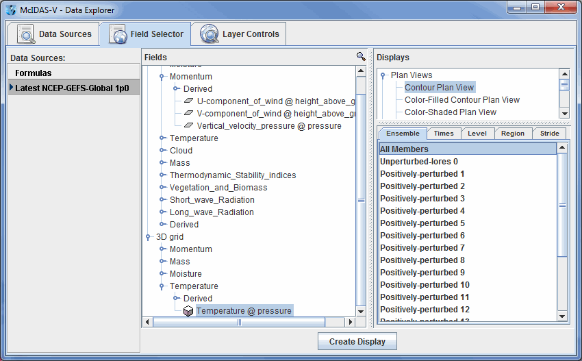
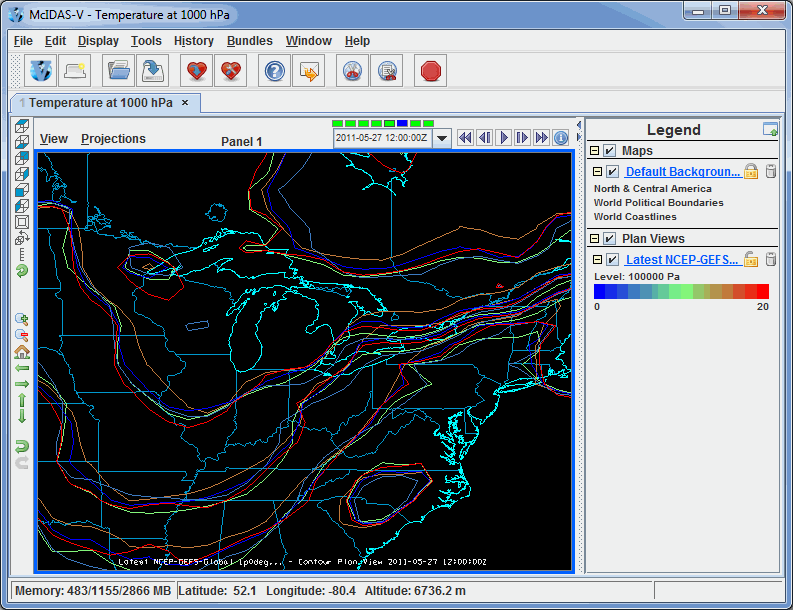
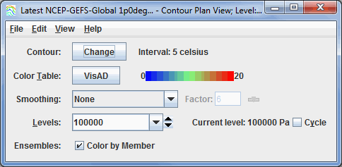

Overview
The Ensemble Grid feature in McIDAS-V allows you to create a plot of possible forecast scenarios from model data. This plot is produced by adding a perturbation to the initial model solution, and by adding perturbations to every subsequent perturbation. Thus, each perturbation away from the unperturbed initial model output theoretically diverges further from the initial model solution. These perturbations can be the result of slightly different initial conditions or different physics utilized by the model. Ensemble Grid displays are a valuable tool for medium range weather forecasting.
The Ensemble Grid controls are accessed through the Data Explorer window by selecting an ensemble run in the Data Sources tab, and then defining the parameter to display and the output format in the Field Selector. You can also utilize McIDAS-V's ensemble formulas to display this data.

Image 1: Ensemble Grid Data in the Field Selector Tab of the Data Explorer
By default, McIDAS-V displays all ensemble members. This can be changed in the Field Selector by selecting the Ensemble tab. You can select a range of ensemble members with the Shift key, or individual ensemble members with the Ctrl key. The times used to display the data can be changed in the Times tab. When displaying a 3D grid parameter, use the Level tab to select which level(s) to display. You can select a specific region to plot the data with the Region tab, or select how many data points to plot with the Stride tab. Press to plot the data in the Main Display window.

Image 2: Ensemble Grid Data Displayed in the Main Display Window
There are a variety of ways to customize the display once it has been plotted. These options can be found in the Layer Controls tab of the Data Explorer.

Image 3: Ensemble Grid Controls
Properties
- Contour - Opens the Contour Properties Editor to change how the contours appear in the Main Display window.
- Color Table - Shows the active color table and the associated high and low data values in the units of the display. As the mouse pointer is moved over the color bar, the value at a particular color is shown. Right click on the color bar or click on the button that displays the name of the Color Table to make modifications to the color bar. This allows you to open the Color
Table Editor, change the range, select other color tables, etc.
- Smoothing - Smooths the grid. There are seven types of smoothing: None, 5-point, 9-point, Gaussian Weighted, Cressman Weighted, Circular Aperture, and Rectangular Aperture. The amount of smoothness can be set for all except the 5 and 9-point smoothers. The higher the amount, the smoother the grid. For the Cressman, Circular and Rectangular aperture smoothing types, the smoothing factor is the radius in grid spacing units.
- Levels - Shows the current level being displayed. The dropdown menu lists the native grid levels. Click on one level value to reset the plan to that level. The plan level in use is shown in the data's native altitude units. The Levels box is editable. Click in the box, enter a value and hit Enter to set your own value. Additionally, you can click on the arrows to the right of the Levels box to switch levels, or click on the Cycle checkbox to animate vertically through all available levels.
- Ensembles - Colors the contours by the ensemble member number when the Color by Member checkbox is checked. When this box is unchecked, the contours will be colored by the physical parameter being displayed. Note that the enhancement range for Color Table may need to be adjusted to match the values of the parameter. This option is only available for the Contour Plan View display. With the Color-Filled Contour Plan View and Color-Shaded Plan View display types, the default is to color by the parameter values.
Menus
Many of the menu items seen utilizing this display are standard options that can be found in the Menus section of the Layer Controls page. However, there are a couple of options that are unique to this display.
The Edit menu has this unique option:
The View menu has this unique option:
- Use Grid Projection - Re-centers the display and resets the zoom level back to the display's initial settings without changing any other preferences you have modified.